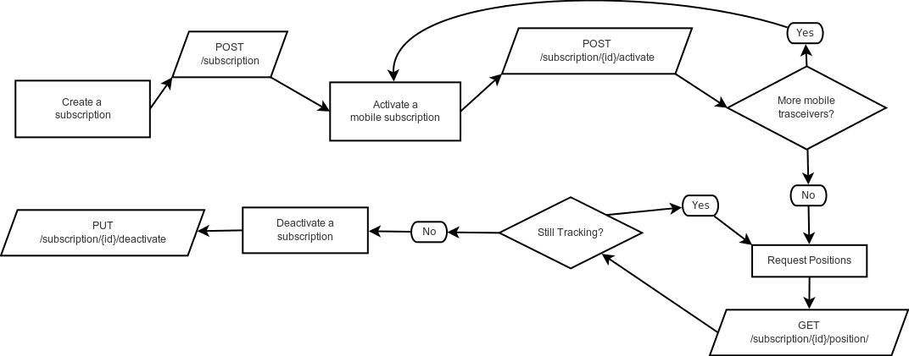

NAV

Introduction
Welcome to the Pole Star Global Commercial API Service (CAS)
This API is intended for use by authorised 3rd parties who need to programmatically perform actions on Pole Star Services. The current implementation provides the facility for tracking vessels through multiple communication sources, blending this feed per vessel. Positions can be accessed across a fleet, per ship, or per mobile transceiver.
In general this API follows a RESTful architecture. The current expected communication format is with json for both requests and responses.
We have language bindings in Shell, Ruby, and Python! You can view code examples in the dark area to the right, and you can switch the programming language of the examples with the tabs in the top right.
This example API documentation page was created with Slate. Feel free to edit it and use it as a base for your own API’s documentation.
Terminology
Terminology
Ship - A ship entity, that has a set of related details e.g. type, name, imo number, it should map one to one with a real ship.
Mobile Transceiver - A device on-board (or to be installed on-board) a ship, a purpose of this device should be to transmit the location of the ship, via radio frequency (RF), e.g. over satellite network.
Subscription - Represents the user’s relationship with a ship. i.e. The user started tracking on a given date ended tracking on a given date. It serves as a collection of mobile subscriptions so that we can provided a blended track of position from multiple positions sources against a ship. e.g. A subscription will form the relationship between the user “Tim” and the ship with name “Elizabeth” and IMO number 1234567. Against this subscription 2 mobile subscriptions are associated, one AIS device, and one Inmarsat-C device.
Mobile Subscription - Represents the user’s relationship with a mobile transceiver on a ship, e.g. an ais transceiver. i.e. the user activated the mobile transceiver on a given date and deactivated the device on a given date. e.g. Given a subscription for a user “Tim” with a ship with IMO number 1234567. The user could activate a mobile subscription for the AIS device on-board this ship.
Channel - A channel identifies the details used to communicate with the network indicated by the protocol.
Protocol - Identifies the means by which we contact the network that the mobile transceiver operates on and is used to determine which software driver will handle operations for that network.
Manufacturer - Represents the manufacturer of the mobile transceiver on-board the ship. e.g. Skywave.
Model - Represents the model of the mobile transceiver on-board the vessel. e.g. IDP-690.
Activate - An action that is performed to commence reporting of positions on a given mobile transceiver. This action will create a mobile subscription.
Deactivate - An action that is performed to terminate reporting of positions on a given mobile transceiver. This action will end a mobile subscription. The term is also used when terminating an entire subscription.
Position - A report from a specified source of latitude and longitude at a given moment in time. A position may also contain further information describing the state of that source.
Immediate position - An action that is performed to request the most updated position from a mobile transceiver.
Work flow
Tracking a ship

The above flow diagram represents the calls needed to first create a subscription on a given ship, then activating one or more mobile subscriptions against the {id} returned by the create subscription request. The position request can be polled periodically with a date range in order to track the ship’s position. When completed the subscription should be deactivated. This will also deactivate all active mobile subscriptions.
Swapping mobile transceivers

The above flow diagram represents the calls needed to first create a subscription on a given ship, then activating one or more mobile subscriptions against the {id} returned by the create subscription request. The position request can be polled periodically with a date range in order to track the ship’s position. When completed the subscription should be deactivated. This will also deactivate all active mobile subscriptions.
Immediate position request

The above flow diagram represents the calls needed to first create a subscription on a given ship, then activating one or more mobile subscriptions against the {id} returned by the create subscription request. The position request can be polled periodically with a date range in order to track the ship’s position. When completed the subscription should be deactivated. This will also deactivate all active mobile subscriptions.
Authentication
To authorize, use this code:
require 'kittn'
api = Kittn::APIClient.authorize!('meowmeowmeow')
import kittn
api = kittn.authorize('meowmeowmeow')
# With shell, you can just pass the correct header with each request
curl "api_endpoint_here"
-H "Authorization: meowmeowmeow"
Make sure to replace
meowmeowmeowwith your API key.
Pole Star uses API keys to allow access to the API. You can register a new Pole Star API key at our API Portal.
Pole Star expects for the API key to be included in all API requests to the server in a header that looks like the following:
Authorization: meowmeowmeow
Kittens
Get All Kittens
require 'kittn'
api = Kittn::APIClient.authorize!('meowmeowmeow')
api.kittens.get
import kittn
api = kittn.authorize('meowmeowmeow')
api.kittens.get()
curl "http://example.com/api/kittens"
-H "Authorization: meowmeowmeow"
The above command returns JSON structured like this:
[
{
"id": 1,
"name": "Fluffums",
"breed": "calico",
"fluffiness": 6,
"cuteness": 7
},
{
"id": 2,
"name": "Isis",
"breed": "unknown",
"fluffiness": 5,
"cuteness": 10
}
]
This endpoint retrieves all kittens.
HTTP Request
GET http://example.com/api/kittens
Query Parameters
| Parameter | Default | Description |
|---|---|---|
| include_cats | false | If set to true, the result will also include cats. |
| available | true | If set to false, the result will include kittens that have already been adopted. |
Get a Specific Kitten
require 'kittn'
api = Kittn::APIClient.authorize!('meowmeowmeow')
api.kittens.get(2)
import kittn
api = kittn.authorize('meowmeowmeow')
api.kittens.get(2)
curl "http://example.com/api/kittens/2"
-H "Authorization: meowmeowmeow"
The above command returns JSON structured like this:
{
"id": 2,
"name": "Isis",
"breed": "unknown",
"fluffiness": 5,
"cuteness": 10
}
This endpoint retrieves a specific kitten.
HTTP Request
GET http://example.com/kittens/<ID>
URL Parameters
| Parameter | Description |
|---|---|
| ID | The ID of the kitten to retrieve |
Get a Specific Kitten
require 'kittn'
api = Kittn::APIClient.authorize!('meowmeowmeow')
api.kittens.get(2)
import kittn
api = kittn.authorize('meowmeowmeow')
api.kittens.get(2)
curl "http://example.com/api/kittens/2"
-H "Authorization: meowmeowmeow"
The above command returns JSON structured like this:
{
"id": 2,
"name": "Isis",
"breed": "unknown",
"fluffiness": 5,
"cuteness": 10
}
This endpoint retrieves a specific kitten.
HTTP Request
GET http://example.com/kittens/<ID>
URL Parameters
| Parameter | Description |
|---|---|
| ID | The ID of the kitten to retrieve |
Get a Specific Kitten
require 'kittn'
api = Kittn::APIClient.authorize!('meowmeowmeow')
api.kittens.get(2)
import kittn
api = kittn.authorize('meowmeowmeow')
api.kittens.get(2)
curl "http://example.com/api/kittens/2"
-H "Authorization: meowmeowmeow"
The above command returns JSON structured like this:
{
"id": 2,
"name": "Isis",
"breed": "unknown",
"fluffiness": 5,
"cuteness": 10
}
This endpoint retrieves a specific kitten.
HTTP Request
GET http://example.com/kittens/<ID>
URL Parameters
| Parameter | Description |
|---|---|
| ID | The ID of the kitten to retrieve |
Errors
The Kittn API uses the following error codes:
| Error Code | Meaning |
|---|---|
| 400 | Bad Request – Your request sucks |
| 401 | Unauthorized – Your API key is wrong |
| 403 | Forbidden – The kitten requested is hidden for administrators only |
| 404 | Not Found – The specified kitten could not be found |
| 405 | Method Not Allowed – You tried to access a kitten with an invalid method |
| 406 | Not Acceptable – You requested a format that isn’t json |
| 410 | Gone – The kitten requested has been removed from our servers |
| 418 | I’m a teapot |
| 429 | Too Many Requests – You’re requesting too many kittens! Slow down! |
| 500 | Internal Server Error – We had a problem with our server. Try again later. |
| 503 | Service Unavailable – We’re temporarially offline for maintanance. Please try again later. |
Terms and Conditions
By using this API, you agree to the terms and conditions set forth by Pole Star Global http://web.polestarglobal.com/.